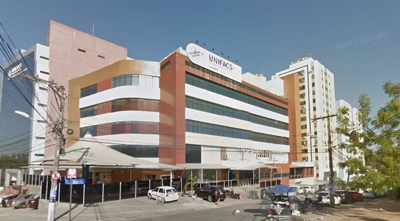

Local
Campus Prof. Barros – Torre Sul Av. Luís Viana Filho 3100. Paralela Salvador – Bahia. CEP. 41.720-200
Tel.: (71) 3462-1576 e 3206-6754

Campus Prof. Barros – Torre Sul Av. Luís Viana Filho 3100. Paralela Salvador – Bahia. CEP. 41.720-200
Tel.: (71) 3462-1576 e 3206-6754